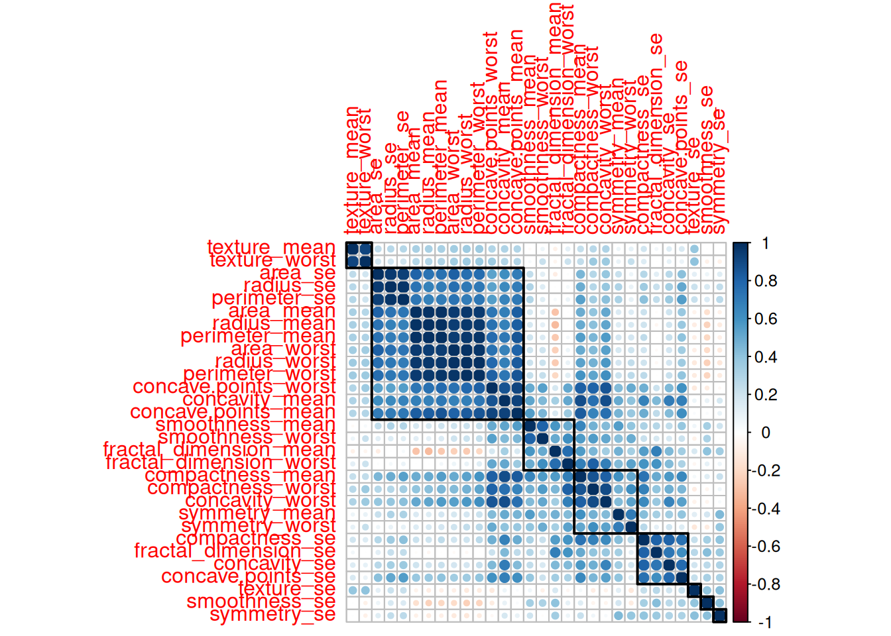
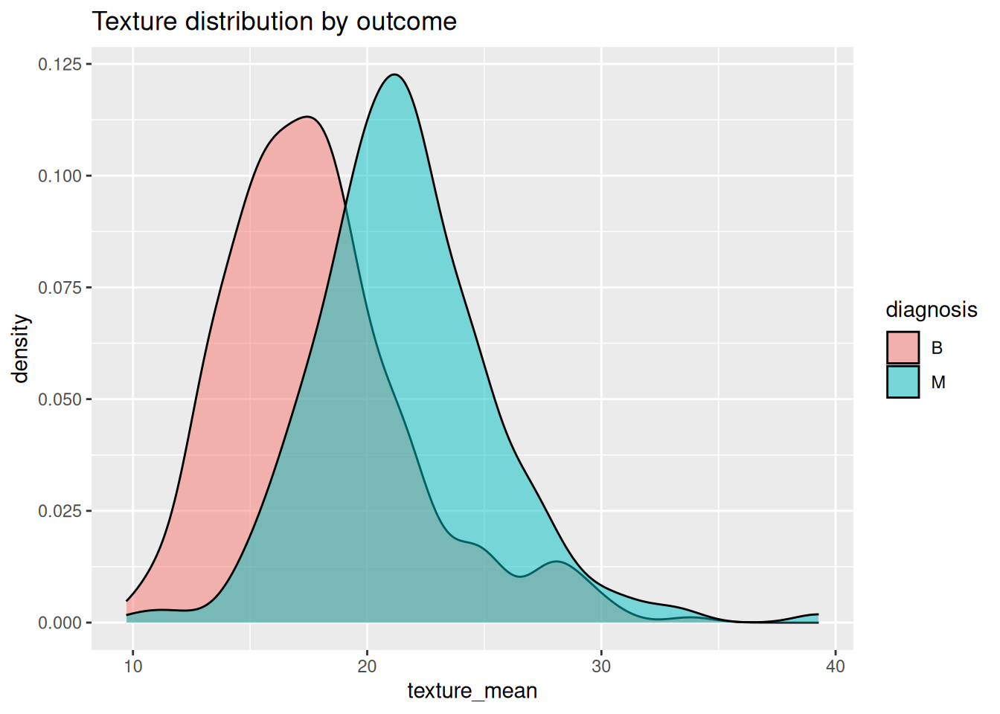
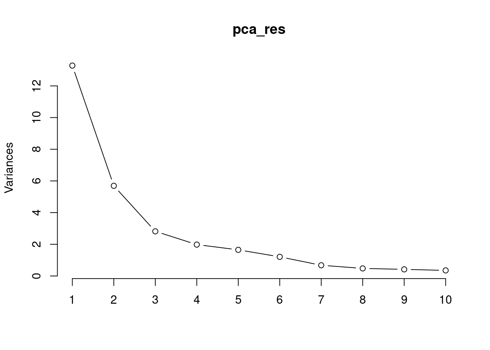
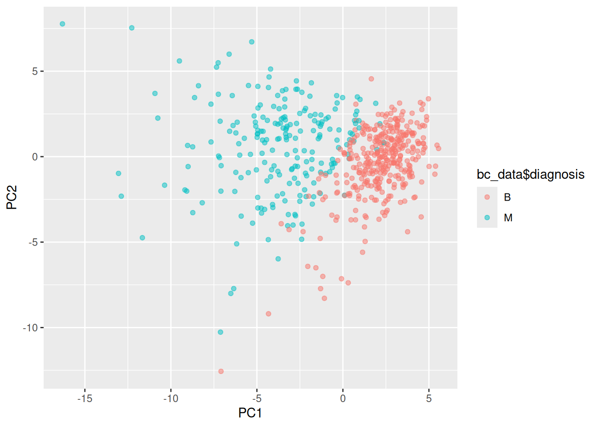
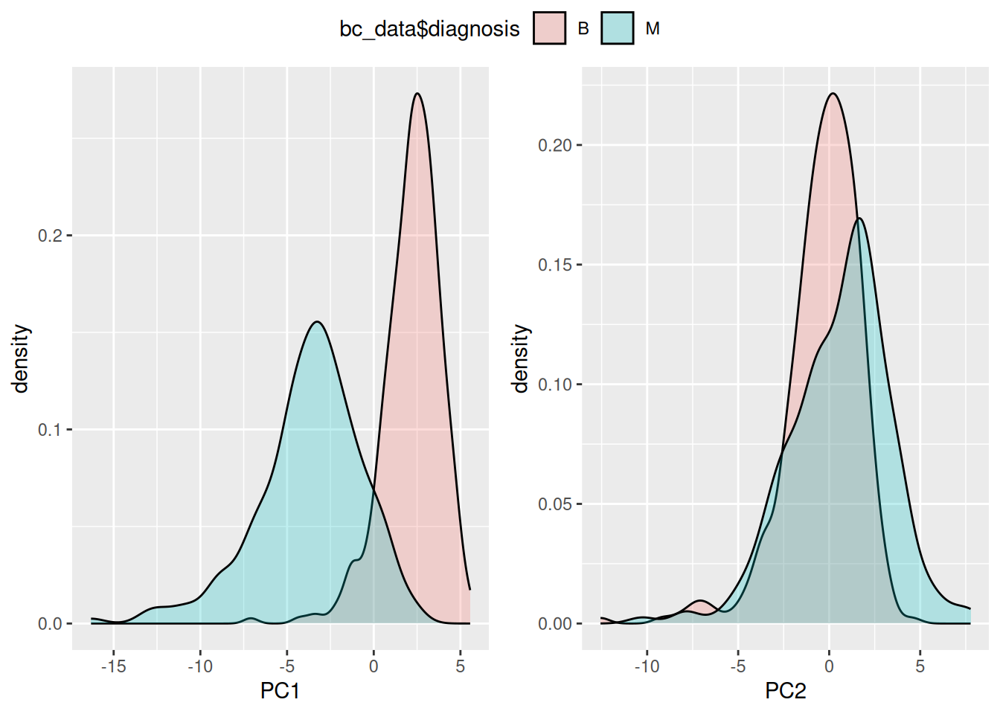

install.packages("psych")
install.packages("corrplot")
install.packages("ggplot2")
install.packages("caret")
install.packages("ggpubr")
install.packages("klaR")32 Naive-Bayes ile Meme Kanser Veri Analizi
İlk olarak aşağıda bulunan paketleri kurmanız gerekidir:
Daha sonra bu paketleri yükleyelim:
corrplot 0.92 loaded
Attaching package: 'ggplot2'The following objects are masked from 'package:psych':
%+%, alphaLoading required package: latticeLoading required package: MASSBu çalışmada kullanılan tutorial:
https://www.kaggle.com/code/lbronchal/breast-cancer-dataset-analysis
Veri setimizi alalım (Siz buraya kendi dosya yolunuzu yazacaksınız). Veri seti link: https://www.kaggle.com/code/lbronchal/breast-cancer-dataset-analysis/input
İlk olarak verimizi yükleyelim:
bc_data <- read.csv("https://raw.githubusercontent.com/emrahkirdok/ybva/main/05-istatistik/data.csv")Teşhisi faktör olarak düzenleyelim (M:malign tümör, B:benign tümör) ve veri setini inceleyelim:
id diagnosis radius_mean texture_mean
Min. : 8670 B:357 Min. : 6.981 Min. : 9.71
1st Qu.: 869218 M:212 1st Qu.:11.700 1st Qu.:16.17
Median : 906024 Median :13.370 Median :18.84
Mean : 30371831 Mean :14.127 Mean :19.29
3rd Qu.: 8813129 3rd Qu.:15.780 3rd Qu.:21.80
Max. :911320502 Max. :28.110 Max. :39.28
perimeter_mean area_mean smoothness_mean compactness_mean
Min. : 43.79 Min. : 143.5 Min. :0.05263 Min. :0.01938
1st Qu.: 75.17 1st Qu.: 420.3 1st Qu.:0.08637 1st Qu.:0.06492
Median : 86.24 Median : 551.1 Median :0.09587 Median :0.09263
Mean : 91.97 Mean : 654.9 Mean :0.09636 Mean :0.10434
3rd Qu.:104.10 3rd Qu.: 782.7 3rd Qu.:0.10530 3rd Qu.:0.13040
Max. :188.50 Max. :2501.0 Max. :0.16340 Max. :0.34540
concavity_mean concave.points_mean symmetry_mean fractal_dimension_mean
Min. :0.00000 Min. :0.00000 Min. :0.1060 Min. :0.04996
1st Qu.:0.02956 1st Qu.:0.02031 1st Qu.:0.1619 1st Qu.:0.05770
Median :0.06154 Median :0.03350 Median :0.1792 Median :0.06154
Mean :0.08880 Mean :0.04892 Mean :0.1812 Mean :0.06280
3rd Qu.:0.13070 3rd Qu.:0.07400 3rd Qu.:0.1957 3rd Qu.:0.06612
Max. :0.42680 Max. :0.20120 Max. :0.3040 Max. :0.09744
radius_se texture_se perimeter_se area_se
Min. :0.1115 Min. :0.3602 Min. : 0.757 Min. : 6.802
1st Qu.:0.2324 1st Qu.:0.8339 1st Qu.: 1.606 1st Qu.: 17.850
Median :0.3242 Median :1.1080 Median : 2.287 Median : 24.530
Mean :0.4052 Mean :1.2169 Mean : 2.866 Mean : 40.337
3rd Qu.:0.4789 3rd Qu.:1.4740 3rd Qu.: 3.357 3rd Qu.: 45.190
Max. :2.8730 Max. :4.8850 Max. :21.980 Max. :542.200
smoothness_se compactness_se concavity_se concave.points_se
Min. :0.001713 Min. :0.002252 Min. :0.00000 Min. :0.000000
1st Qu.:0.005169 1st Qu.:0.013080 1st Qu.:0.01509 1st Qu.:0.007638
Median :0.006380 Median :0.020450 Median :0.02589 Median :0.010930
Mean :0.007041 Mean :0.025478 Mean :0.03189 Mean :0.011796
3rd Qu.:0.008146 3rd Qu.:0.032450 3rd Qu.:0.04205 3rd Qu.:0.014710
Max. :0.031130 Max. :0.135400 Max. :0.39600 Max. :0.052790
symmetry_se fractal_dimension_se radius_worst texture_worst
Min. :0.007882 Min. :0.0008948 Min. : 7.93 Min. :12.02
1st Qu.:0.015160 1st Qu.:0.0022480 1st Qu.:13.01 1st Qu.:21.08
Median :0.018730 Median :0.0031870 Median :14.97 Median :25.41
Mean :0.020542 Mean :0.0037949 Mean :16.27 Mean :25.68
3rd Qu.:0.023480 3rd Qu.:0.0045580 3rd Qu.:18.79 3rd Qu.:29.72
Max. :0.078950 Max. :0.0298400 Max. :36.04 Max. :49.54
perimeter_worst area_worst smoothness_worst compactness_worst
Min. : 50.41 Min. : 185.2 Min. :0.07117 Min. :0.02729
1st Qu.: 84.11 1st Qu.: 515.3 1st Qu.:0.11660 1st Qu.:0.14720
Median : 97.66 Median : 686.5 Median :0.13130 Median :0.21190
Mean :107.26 Mean : 880.6 Mean :0.13237 Mean :0.25427
3rd Qu.:125.40 3rd Qu.:1084.0 3rd Qu.:0.14600 3rd Qu.:0.33910
Max. :251.20 Max. :4254.0 Max. :0.22260 Max. :1.05800
concavity_worst concave.points_worst symmetry_worst fractal_dimension_worst
Min. :0.0000 Min. :0.00000 Min. :0.1565 Min. :0.05504
1st Qu.:0.1145 1st Qu.:0.06493 1st Qu.:0.2504 1st Qu.:0.07146
Median :0.2267 Median :0.09993 Median :0.2822 Median :0.08004
Mean :0.2722 Mean :0.11461 Mean :0.2901 Mean :0.08395
3rd Qu.:0.3829 3rd Qu.:0.16140 3rd Qu.:0.3179 3rd Qu.:0.09208
Max. :1.2520 Max. :0.29100 Max. :0.6638 Max. :0.20750 Teşhis bilgisine bakalım:
prop.table(table(bc_data$diagnosis))
B M
0.6274165 0.3725835 Veri setini inceleyelim:
describe(bc_data) vars n mean sd median trimmed
id 1 569 30371831.43 125020585.61 906024.00 7344332.77
diagnosis* 2 569 1.37 0.48 1.00 1.34
radius_mean 3 569 14.13 3.52 13.37 13.82
texture_mean 4 569 19.29 4.30 18.84 19.04
perimeter_mean 5 569 91.97 24.30 86.24 89.74
area_mean 6 569 654.89 351.91 551.10 606.13
smoothness_mean 7 569 0.10 0.01 0.10 0.10
compactness_mean 8 569 0.10 0.05 0.09 0.10
concavity_mean 9 569 0.09 0.08 0.06 0.08
concave.points_mean 10 569 0.05 0.04 0.03 0.04
symmetry_mean 11 569 0.18 0.03 0.18 0.18
fractal_dimension_mean 12 569 0.06 0.01 0.06 0.06
radius_se 13 569 0.41 0.28 0.32 0.36
texture_se 14 569 1.22 0.55 1.11 1.16
perimeter_se 15 569 2.87 2.02 2.29 2.51
area_se 16 569 40.34 45.49 24.53 31.69
smoothness_se 17 569 0.01 0.00 0.01 0.01
compactness_se 18 569 0.03 0.02 0.02 0.02
concavity_se 19 569 0.03 0.03 0.03 0.03
concave.points_se 20 569 0.01 0.01 0.01 0.01
symmetry_se 21 569 0.02 0.01 0.02 0.02
fractal_dimension_se 22 569 0.00 0.00 0.00 0.00
radius_worst 23 569 16.27 4.83 14.97 15.73
texture_worst 24 569 25.68 6.15 25.41 25.39
perimeter_worst 25 569 107.26 33.60 97.66 103.42
area_worst 26 569 880.58 569.36 686.50 788.02
smoothness_worst 27 569 0.13 0.02 0.13 0.13
compactness_worst 28 569 0.25 0.16 0.21 0.23
concavity_worst 29 569 0.27 0.21 0.23 0.25
concave.points_worst 30 569 0.11 0.07 0.10 0.11
symmetry_worst 31 569 0.29 0.06 0.28 0.28
fractal_dimension_worst 32 569 0.08 0.02 0.08 0.08
mad min max range skew
id 65567.98 8670.00 911320502.00 911311832.00 6.44
diagnosis* 0.00 1.00 2.00 1.00 0.53
radius_mean 2.82 6.98 28.11 21.13 0.94
texture_mean 4.17 9.71 39.28 29.57 0.65
perimeter_mean 18.84 43.79 188.50 144.71 0.99
area_mean 227.28 143.50 2501.00 2357.50 1.64
smoothness_mean 0.01 0.05 0.16 0.11 0.45
compactness_mean 0.05 0.02 0.35 0.33 1.18
concavity_mean 0.06 0.00 0.43 0.43 1.39
concave.points_mean 0.03 0.00 0.20 0.20 1.17
symmetry_mean 0.03 0.11 0.30 0.20 0.72
fractal_dimension_mean 0.01 0.05 0.10 0.05 1.30
radius_se 0.16 0.11 2.87 2.76 3.07
texture_se 0.47 0.36 4.88 4.52 1.64
perimeter_se 1.14 0.76 21.98 21.22 3.43
area_se 13.63 6.80 542.20 535.40 5.42
smoothness_se 0.00 0.00 0.03 0.03 2.30
compactness_se 0.01 0.00 0.14 0.13 1.89
concavity_se 0.02 0.00 0.40 0.40 5.08
concave.points_se 0.01 0.00 0.05 0.05 1.44
symmetry_se 0.01 0.01 0.08 0.07 2.18
fractal_dimension_se 0.00 0.00 0.03 0.03 3.90
radius_worst 3.65 7.93 36.04 28.11 1.10
texture_worst 6.42 12.02 49.54 37.52 0.50
perimeter_worst 25.01 50.41 251.20 200.79 1.12
area_worst 319.65 185.20 4254.00 4068.80 1.85
smoothness_worst 0.02 0.07 0.22 0.15 0.41
compactness_worst 0.13 0.03 1.06 1.03 1.47
concavity_worst 0.20 0.00 1.25 1.25 1.14
concave.points_worst 0.07 0.00 0.29 0.29 0.49
symmetry_worst 0.05 0.16 0.66 0.51 1.43
fractal_dimension_worst 0.01 0.06 0.21 0.15 1.65
kurtosis se
id 41.66 5241135.60
diagnosis* -1.73 0.02
radius_mean 0.81 0.15
texture_mean 0.73 0.18
perimeter_mean 0.94 1.02
area_mean 3.59 14.75
smoothness_mean 0.82 0.00
compactness_mean 1.61 0.00
concavity_mean 1.95 0.00
concave.points_mean 1.03 0.00
symmetry_mean 1.25 0.00
fractal_dimension_mean 2.95 0.00
radius_se 17.45 0.01
texture_se 5.26 0.02
perimeter_se 21.12 0.08
area_se 48.59 1.91
smoothness_se 10.32 0.00
compactness_se 5.02 0.00
concavity_se 48.24 0.00
concave.points_se 5.04 0.00
symmetry_se 7.78 0.00
fractal_dimension_se 25.94 0.00
radius_worst 0.91 0.20
texture_worst 0.20 0.26
perimeter_worst 1.04 1.41
area_worst 4.32 23.87
smoothness_worst 0.49 0.00
compactness_worst 2.98 0.01
concavity_worst 1.57 0.01
concave.points_worst -0.55 0.00
symmetry_worst 4.37 0.00
fractal_dimension_worst 5.16 0.00Korelasyon matrixi ile ilişkili olan verileri inceleyelim:
corr_mat <- cor(bc_data[,3:ncol(bc_data)])
corrplot(corr_mat, order = "hclust", tl.cex = 1, addrect = 8)
Etkenlerden birini seçip plotlayalım:
ggplot(bc_data, aes(x=texture_mean)) + geom_density(alpha=0.5, aes(fill=diagnosis)) + labs(title="Texture distribution by outcome")
Şimdi yavaşça işin makine öğrenmesi kısmına başlıyoruz. Burada veri setimiz rastgele olarak iki parçaya bölünüyor: Makineye “öğreten” training set ve bunu test eden testing set.
set.seed(1234)
data_index <- createDataPartition(bc_data$diagnosis, p=0.7, list = FALSE)
train_data <- bc_data[data_index, -1]
test_data <- bc_data[-data_index, -1]şimdi de bu bölünen kısımların oranlarına bakalım:
Veri setimiz:
prop.table(table(bc_data$diagnosis)) * 100
B M
62.74165 37.25835 Training setimiz:
prop.table(table(train_data$diagnosis)) * 100
B M
62.65664 37.34336 Testing setimiz:
prop.table(table(test_data$diagnosis)) * 100
B M
62.94118 37.05882 Verilerimizi görselleştirelim:

summary(pca_res)Importance of components:
PC1 PC2 PC3 PC4 PC5 PC6 PC7
Standard deviation 3.6444 2.3857 1.67867 1.40735 1.28403 1.09880 0.82172
Proportion of Variance 0.4427 0.1897 0.09393 0.06602 0.05496 0.04025 0.02251
Cumulative Proportion 0.4427 0.6324 0.72636 0.79239 0.84734 0.88759 0.91010
PC8 PC9 PC10 PC11 PC12 PC13 PC14
Standard deviation 0.69037 0.6457 0.59219 0.5421 0.51104 0.49128 0.39624
Proportion of Variance 0.01589 0.0139 0.01169 0.0098 0.00871 0.00805 0.00523
Cumulative Proportion 0.92598 0.9399 0.95157 0.9614 0.97007 0.97812 0.98335
PC15 PC16 PC17 PC18 PC19 PC20 PC21
Standard deviation 0.30681 0.28260 0.24372 0.22939 0.22244 0.17652 0.1731
Proportion of Variance 0.00314 0.00266 0.00198 0.00175 0.00165 0.00104 0.0010
Cumulative Proportion 0.98649 0.98915 0.99113 0.99288 0.99453 0.99557 0.9966
PC22 PC23 PC24 PC25 PC26 PC27 PC28
Standard deviation 0.16565 0.15602 0.1344 0.12442 0.09043 0.08307 0.03987
Proportion of Variance 0.00091 0.00081 0.0006 0.00052 0.00027 0.00023 0.00005
Cumulative Proportion 0.99749 0.99830 0.9989 0.99942 0.99969 0.99992 0.99997
PC29 PC30
Standard deviation 0.02736 0.01153
Proportion of Variance 0.00002 0.00000
Cumulative Proportion 1.00000 1.00000Teşhis bilgisinin temel bileşen analizini yapalım:
pca_df <- as.data.frame(pca_res$x)
ggplot(pca_df, aes(x=PC1, y=PC2, col=bc_data$diagnosis)) + geom_point(alpha=0.5)
Teşhis bilgisi için her bileşeni ayrıca inceleyelim:
g_pc1 <- ggplot(pca_df, aes(x=PC1, fill=bc_data$diagnosis)) + geom_density(alpha=0.25)
g_pc2 <- ggplot(pca_df, aes(x=PC2, fill=bc_data$diagnosis)) + geom_density(alpha=0.25)
ggarrange(g_pc1, g_pc2, ncol=2, common.legend = T)
Modeli oluşturalım ve görüntüleyelim:
fitControl <- trainControl(method="cv", number = 5, preProcOptions = list(thresh = 0.99), classProbs = TRUE, summaryFunction = twoClassSummary)
model_nb <- train(diagnosis~., train_data, method="nb", metric="ROC", preProcess=c('center', 'scale'), trace=FALSE, trControl=fitControl)Modeli test edelim ve inceleyelim (bunu aslında yukarıda da yaptık)
Predict <- predict(model_nb,newdata = test_data)
confusionMatrix(Predict, test_data$diagnosis)Confusion Matrix and Statistics
Reference
Prediction B M
B 102 10
M 5 53
Accuracy : 0.9118
95% CI : (0.8586, 0.9498)
No Information Rate : 0.6294
P-Value [Acc > NIR] : <2e-16
Kappa : 0.8077
Mcnemar's Test P-Value : 0.3017
Sensitivity : 0.9533
Specificity : 0.8413
Pos Pred Value : 0.9107
Neg Pred Value : 0.9138
Prevalence : 0.6294
Detection Rate : 0.6000
Detection Prevalence : 0.6588
Balanced Accuracy : 0.8973
'Positive' Class : B
Her tahmin yürütücü değişkenin outcome/çıktı üzerindeki etkilerini kıyaslayalım:
Yorum artık sizde, yukarıdaki grafiğe bakarak bir kişiye meme kanseri teşhisi konmasındaki en önemli etkenler hangileri olarak görünüyor?